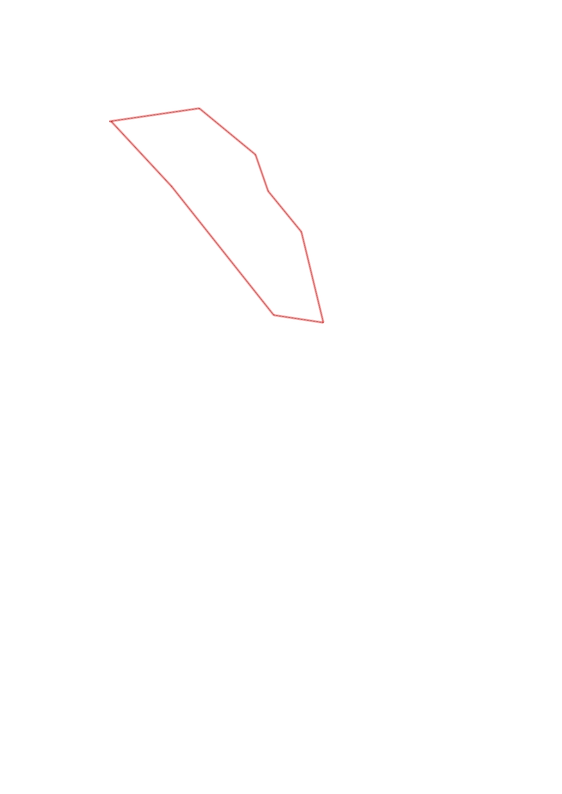
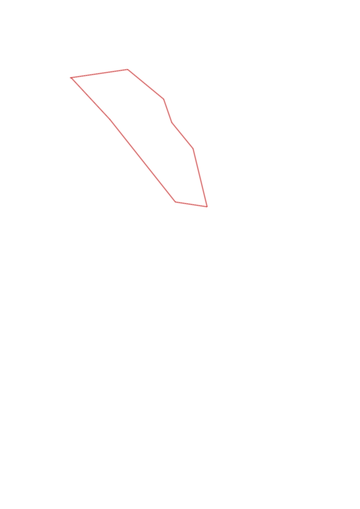

| Control |
Points |
Time Punched |
Distance |
Your Time |
Pace |
Place |
Fastest Time |
Median Time |
% Behind Fastest |
| 33 |
30 |
|
0.49 |
0:03:18 |
06:44 |
3 / 8 |
0:02:06 |
0:03:23 |
57% |
| 57 |
50 |
|
0.39 |
0:06:02 |
15:28 |
3 / 5 |
0:05:22 |
0:06:02 |
12% |
| 52 |
50 |
|
0.21 |
0:04:34 |
21:44 |
2 / 7 |
0:04:11 |
0:04:44 |
9% |
| 63 |
60 |
|
0.28 |
0:04:22 |
15:35 |
5 / 7 |
0:02:58 |
0:03:43 |
47% |
| 104 |
100 |
|
0.5 |
0:16:58 |
33:56 |
4 / 4 |
0:05:55 |
0:14:40 |
186% |
| 35 |
30 |
|
0.27 |
0:03:03 |
11:17 |
1 / 2 |
0:03:03 |
0:04:04 |
0% |
| 42 |
40 |
|
0.88 |
0:22:57 |
26:04 |
1 / 1 |
0:22:57 |
0:22:57 |
0% |
| Finish |
0 |
|
0.47 |
0:02:31 |
05:21 |
3 / 9 |
0:02:13 |
0:03:12 |
13% |
Total Distance Covered: 3.49km
Points Scored: 360
Late Penalty: -80
Final Score: 280
Total Time: 1hours 3minutes 45seconds
Efficiency: 80.23 points/km
 
